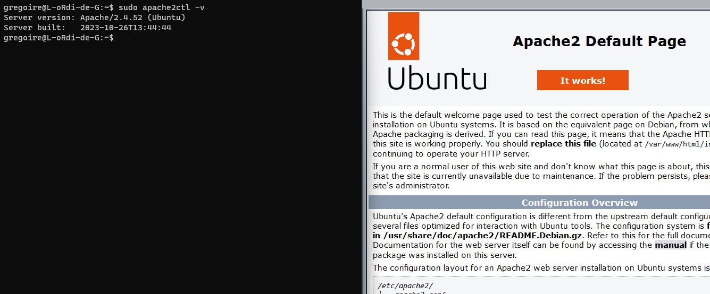
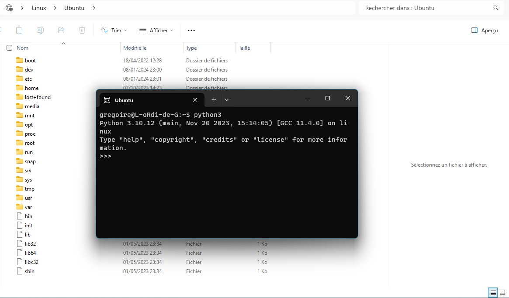

Des captures d'écran pris sur mon ordinateur booté sous Linux, avec une clé USB d'installation persistante.


WSL m'a permis d'installer Apache pour faire tourner un serveur en local sur mon ordinateur pour exécuter du PHP

